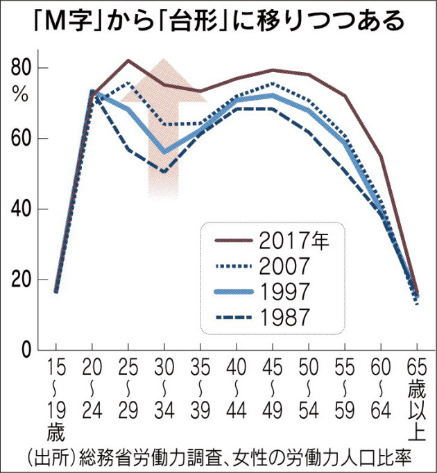
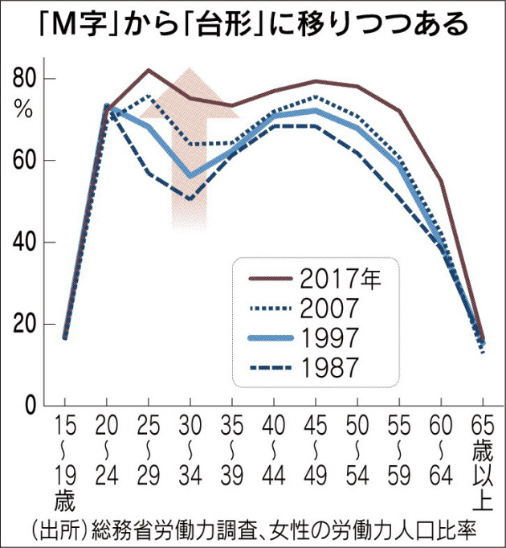

M字型曲線
M字型曲線とは、女性の年齢別労働力率をグラフで示したときに現れるM字のこと。女性は結婚や出産をしたら家庭に入るという価値観がある国に強く現れる。
日本では女性の働き方は学卒後働き、結婚・出産によって退職し、子育ての目途がついたらまた働くというもので、M字型曲線が顕著である。
ただし近年はスウェーデンやアメリカと似た「台形」のグラフに近づきつつある。
M字型曲線とは、女性の年齢別労働力率をグラフで示したときに現れるM字のこと。女性は結婚や出産をしたら家庭に入るという価値観がある国に強く現れる。
日本では女性の働き方は学卒後働き、結婚・出産によって退職し、子育ての目途がついたらまた働くというもので、M字型曲線が顕著である。
ただし近年はスウェーデンやアメリカと似た「台形」のグラフに近づきつつある。